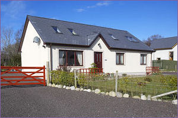

Turncroft, Blackcrofts (Oban)

Price: £265,000
North Connel is a highly desirable and up-market location, close to Loch Etive. The nearest town of Oban is approximately 6 miles distant and offers a wide range of shopping, recreational and leisure facilities. There are churches of various denominations, primary schools, a High School, a medical centre and a hospital. Local amenities can be found at nearby villages of Benderloch and Connel where there are also primary schools and shops.
Directions
Travelling from Oban, cross over the Connel Bridge (North West) and then take the first turning on the right. Continue approximately 1/2 of a mile along the road, following the shores of Loch Etive, and turn left into the single-track road at the side of the property Llanbryde. Turncroft can be found on the left hand side of the cul-de-sac.
Description
The house was completed approximately four years ago. It was architecturally designed and constructed by a highly regarded local NHBC registered builder. Modern day technology provides a very comfortable, well-insulated and energy-efficient family home. All the windows are double-glazed and it benefits from Calor Gas central heating.
Other features include good quality wood finishes including internal doors, door surrounds and skirting boards. The kitchen units and sanitary ware are all of high specification, as befitting a property of this quality.
The rooms are well-appointed and the accommodation could be utilised to suit the successful purchaser’s needs. The downstairs accommodation consists of a good-sized lounge, with French doors opening to the dining room/kitchen. This is a lovely room and the hub of the house as there are two sets of patio doors – one set leads directly out to the garden and the other opens into the garden room. The garden room is integral to the house and offers an additional living area perfectly positioned, overlooking the well-kept gardens and perfect for enjoying the southerly aspect. There are three bedrooms downstairs. The smallest room is currently used as a sitting room/study and the master bedroom has a lovely shower room.
The upstairs accommodation was designed to be almost self-contained and it is ideal for a family member who may want a degree of privacy and independence. It has an upper lounge with a bedroom off, a further bedroom, a spacious bathroom and a box room.
Whilst it has always been used as a family home, there is obvious bed and breakfast potential for someone wishing to earn a small income from the property.
There are modern, attractive, light fittings throughout. In addition, glazed panel doors and the Velux windows on the upper floor allow good natural light. The presentation of the property, both inside and outside, is immaculate. It is decorated in neutral and pastel colour schemes and has a mixture of fitted carpets and good quality laminate flooring.
The property occupies a good-sized, level, plot and is flanked by a driveway at each side continuing around to the rear where the landscaped garden is easily maintained and is a pleasant mixture of chips, coloured slab paths, an ornamental pond and raised flower and shrub beds. The front garden is laid to grass and has attractive shrub borders and is fenced from the road.
The accommodation with approximate sizes (for guidance purposes only) is as follows: -
Vestibule 1.41m x 1.59m
Built-in cloaks cupboard with handing rail and shelf. Wall mounted mirror
Hall
L-shaped. Under stair storage cupboard housing the electric meters. Telephone point
Lounge
Low-set windows (NE). Modern-style wooden fireplace with inset coal effect electric fire on a wooden hearth. Glazed French doors to the dining room, open plan to the kitchen
Kitchen/Dining room 7.82m x 3.25m (overall)
Windows (SW). Glazed patio doors (SW) giving access to the garden. Glazed patio doors (SW) to the garden room. The dining area is separated from the kitchen by a wide, high gloss, work surface forming a small breakfast bar. The kitchen has Hygena wall and floor units with integrated dishwasher and refrigerator. There is a built-in Hotpoint double oven, with Candy cooker hood above, and a separate four-ring electric hob. Stainless steel sink unit with mixer tap and drainer, high gloss work surfaces and matching tiled splashbacks. Door to utility room
Utility Room 1.69m x 3.24m
External door and concrete access ramp to the rear. Built-in shelved cupboard. Shelf. Stainless steel sink unit with mixer tap and drainer with matching Hygena base units below. Hotpoint automatic washing machine and Hotpoint tumble dryer. Upright LG fridge/freezer. Wall mounted Ideal Classic central heating boiler
Garden Room 2.98m x 2.72m
Windows on three sides and glazed French doors opening to a raised patio with steps down at either side to the garden
Bedroom 1 2.16m x 3.27m
Window (NE). Currently used as a sitting room/study. Recess with shelving (former wardrobe with doors and hanging rail removed although these are available for re-instatement, if required)
Bedroom 2 (Master) 3.27m x 3.62m
Window (NE). Wardrobes, with four sliding mirrored doors, along one wall. Door to en-suite shower room
En-suite shower room 1.68m x 1.63m
Frosted window. Fully tiled with attractive tiling and motif. Shower cubicle with mains shower. Matching wash hand basin and wc in white. Matching bathroom accessories. Shaver socket. Ceiling mounted extractor fan
Bedroom 3 2.81m x 2.66m
Window (SW). Double wardrobe, with sliding mirrored doors
Bathroom 1.78m x 3.25m
Frosted window. Attractive tiling to ceiling height continuing to half height along one wall. Three piece suite in a light pastel shade, comprising bath – with mains shower and glass shower screen – wash hand basin and wc. Matching bathroom accessories. Shaver socket. Ceiling mounted extractor fan.
From the hall, the staircase leads to the upper floor accommodation and it has a display ledge on the half-landing turn. Velux window
Upper landing
Doors to upper lounge, box room, bedroom 5 and bathroom
Upper lounge 5.17m x 3.87m
Velux windows (SW and NE). Nicely shaped room, with a slightly coombed ceiling. Door to bedroom 4
Bedroom 4 4.03m x 2.83m
Velux window (SW). Slightly coombed ceiling. Two double built-in wardrobes with louvre doors
Box room 3.08m x 1.92m
Velux window (SW). Coombed ceiling. Built-in work-top with cupboard below
Bedroom 5 4.02m x 3.43m
Twin Velux windows (SW). Slightly coombed ceiling. Two double built-in wardrobes with louvre doors. Telephone point
Bathroom 2.16m x 4.02m
Velux window (SW). Three piece suite in white comprising double-ended bath – with centre mixer tap and shower attachment – wash hand basin, with mixer tap, and wc. Tiled shower cubicle with mains shower. Matching tiled bath panel, splash back and surround. Matching bathroom accessories. Ladder-style heated towel rail. Ceiling mounted extractor fan
Outside
Two field-style wooden gates at either side of the property form two driveways, each under crushed stone and with a turning area. The front garden is laid to grass and has a hedge and stob and wire fence.
A slab path runs along the front of the property and around to the rear garden which has been carefully designed and features patio areas, flower and shrub beds, stone edgings, an ornamental pond, coloured slab pathways between neat gravel chips and a small grassed area. The garden is enclosed within a mixture of wooden trellis-style fencing and stob and wire. Fencing
Calor Gas tank, behind trellis screen
External lighting
External water tap
Whirly clothes dryer
Garden Shed 4m x 3m excluding rear store
Wood-effect metal garden shed with light and power and work bench. Additional, timber-built, store to the rear, with external access.
Bike Shed
Small metal store
Services
Mains water and electricity. Private drainage. Calor Gas central heating. Satellite television. Broadband available
Council Tax
Currently Band "F"
Post Code
PA37 1RA
Closing date
A closing date may be set for the receipt of offers. Interested parties should note their interest in the property
Entry
Entry will be by mutual agreement
Viewing
Viewing is strictly by prior appointment through the sole selling agents. If there is a particular aspect of the property which is important to you, then please discuss it with a member of staff of D M MacKinnon Estates in order to avoid a wasted journey
Note
Most of the furniture and the specified white goods are available by separate negotiation.
Light fittings, fitted carpets, Velux blackout blinds, Velux Venetian blind and the curtains are included in the sale. |